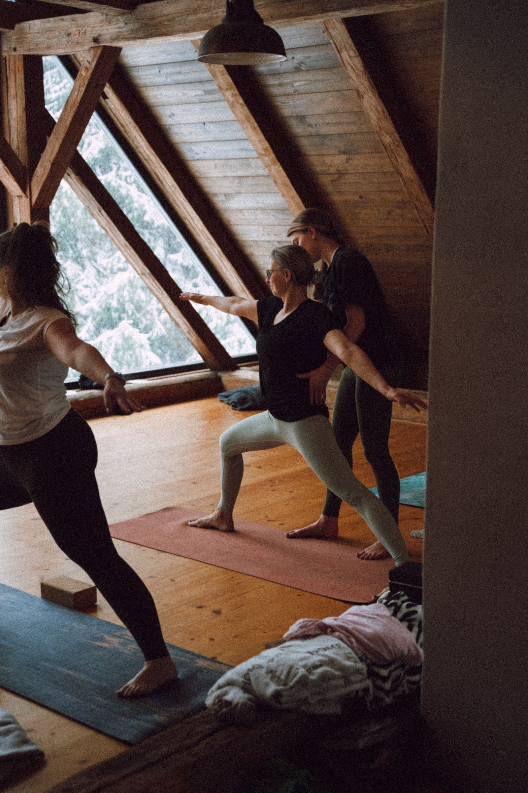
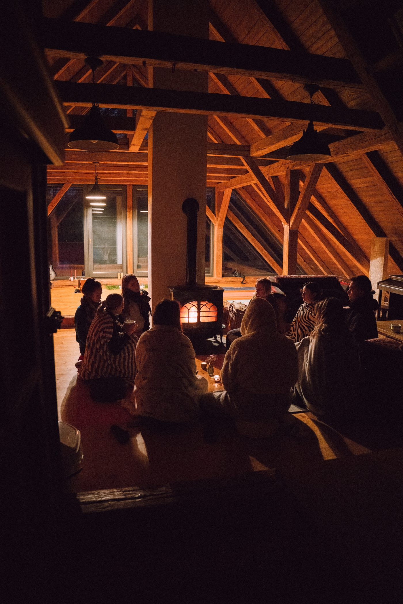
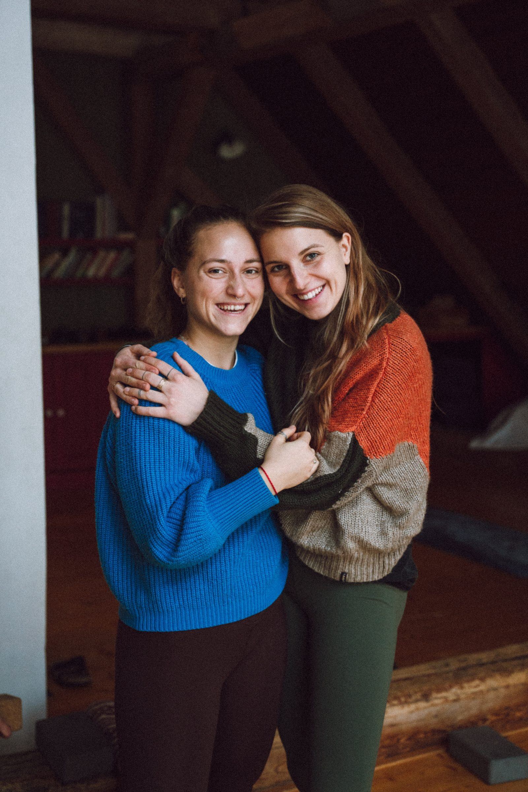

Pravidelné lekce jógy a retreaty Spolučas.
Jógová praxe nám poskytuje nástroje, jak nalézt vnitřní klid a uvolnění. Pomáhá nám při regulaci. Cesta, jak se skrze pohyb a dech znovu naladit na vlastní tělo – ne jako sportovní výkon, ale jako cesta k sobě.
Vnímám jógu jako skvělý nástroj pro ztišení se a naslouchání vnitřnímu světu. Do svých lekcí přináším principy zdravého pohybu, tak abychom v těle mohli nalézat prostor. Aby nám mohlo být oporou a mělo sílu. Věřím, že si každý můžeme vybrat z toho, co nám jóga nabízí, tak abychom se vraceli do rovnováhy. To znamená, že pro každého je cesta jiná.

Rezervace přes whatsappovou skupinu nebo na tel. čísle 720 438 490.
Prodloužené víkendy, kde máme víc prostoru na odpočinek, společnou praxi a sdílení. Více o retreatech se dozvíte na Instagramu @spolučas.

